Planetary Vision 2070: Navigating the Anthropocene
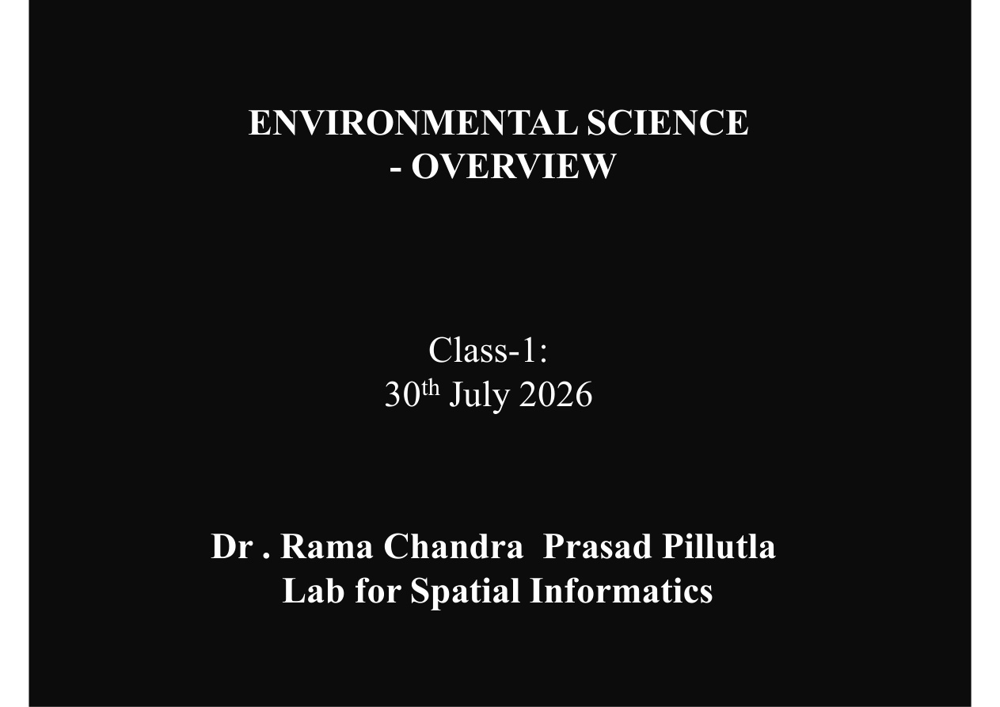
ENVIRONMENTAL SCIENCE
- •ENVIRONMENTAL SCIENCE - OVERVIEW Dr . Rama Chandra Prasad Pillutla Lab for Spatial Informatics
This slide presents essential concepts in Lecture 01: ENVIRONMENTAL SCIENCE. Specifically, it examines ENVIRONMENTAL SCIENCE - OVERVIEW Dr . Rama Chandra Prasad Pillutla Lab for Spatial Informatics. In the broader context of Course overview, sustainable development, environmental ads, global ecological awareness, and Dr. Kalam's 'Letter from 2070' highlighting extreme water scarcity and climate breakdown., mastering this material is critical for analyzing ecological tradeoffs, regulatory frameworks, and exam questions on environmental system dynamics.
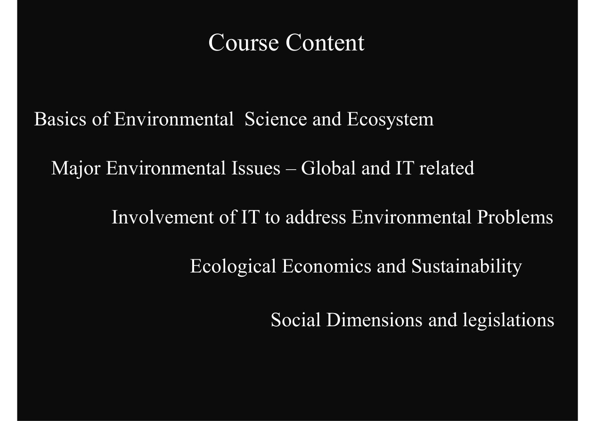
Course Content
- •Course Content Basics of Environmental Science and Ecosystem Major Environmental Issues – Global and IT related Involvement of IT to address Environmental Problems
This slide presents essential concepts in Lecture 01: Course Content. Specifically, it examines Course Content Basics of Environmental Science and Ecosystem Major Environmental Issues – Global and IT related Involvement of IT to address Environmental Problems. In the broader context of Course overview, sustainable development, environmental ads, global ecological awareness, and Dr. Kalam's 'Letter from 2070' highlighting extreme water scarcity and climate breakdown., mastering this material is critical for analyzing ecological tradeoffs, regulatory frameworks, and exam questions on environmental system dynamics.
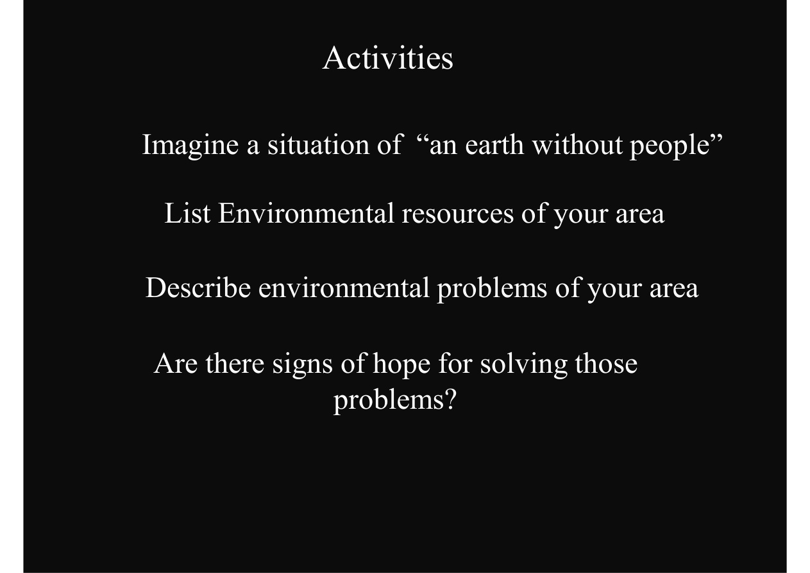
Describe environmental problems of your area
- •Describe environmental problems of your area Are there signs of hope for solving those problems? Imagine a situation of “an earth without people”
This slide presents essential concepts in Lecture 01: Describe environmental problems of your area. Specifically, it examines Describe environmental problems of your area Are there signs of hope for solving those problems? Imagine a situation of “an earth without people”. In the broader context of Course overview, sustainable development, environmental ads, global ecological awareness, and Dr. Kalam's 'Letter from 2070' highlighting extreme water scarcity and climate breakdown., mastering this material is critical for analyzing ecological tradeoffs, regulatory frameworks, and exam questions on environmental system dynamics.
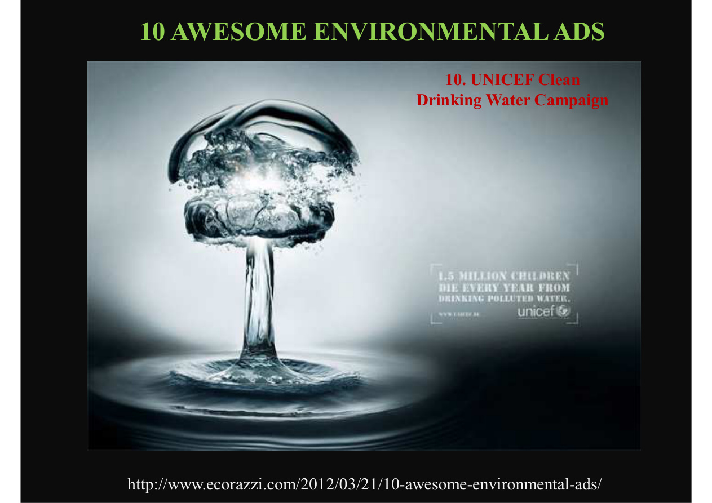
10 AWESOME ENVIRONMENTAL ADS
- •10 AWESOME ENVIRONMENTAL ADS 10. UNICEF Clean Drinking Water Campaign http://www.ecorazzi.com/2012/03/21/10-awesome-environmental-ads/
This slide presents essential concepts in Lecture 01: 10 AWESOME ENVIRONMENTAL ADS. Specifically, it examines 10 AWESOME ENVIRONMENTAL ADS 10. UNICEF Clean Drinking Water Campaign http://www.ecorazzi.com/2012/03/21/10-awesome-environmental-ads/. In the broader context of Course overview, sustainable development, environmental ads, global ecological awareness, and Dr. Kalam's 'Letter from 2070' highlighting extreme water scarcity and climate breakdown., mastering this material is critical for analyzing ecological tradeoffs, regulatory frameworks, and exam questions on environmental system dynamics.
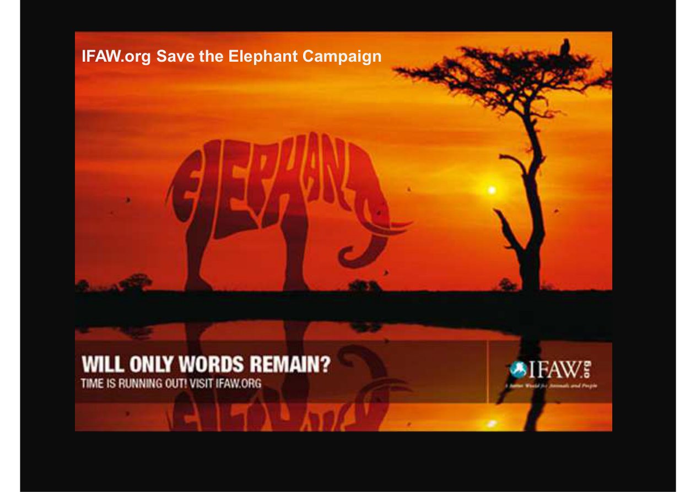
IFAW.org Save the Elephant Campaign
- •IFAW.org Save the Elephant Campaign
This slide presents essential concepts in Lecture 01: IFAW.org Save the Elephant Campaign. Specifically, it examines IFAW.org Save the Elephant Campaign. In the broader context of Course overview, sustainable development, environmental ads, global ecological awareness, and Dr. Kalam's 'Letter from 2070' highlighting extreme water scarcity and climate breakdown., mastering this material is critical for analyzing ecological tradeoffs, regulatory frameworks, and exam questions on environmental system dynamics.
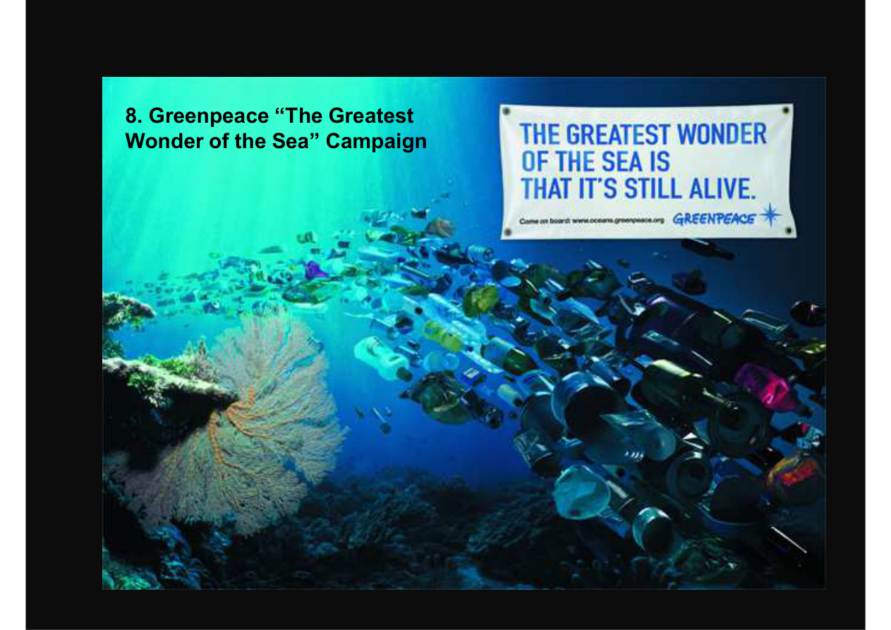
8. Greenpeace “The Greatest
- •8. Greenpeace “The Greatest Wonder of the Sea” Campaign
This slide presents essential concepts in Lecture 01: 8. Greenpeace “The Greatest. Specifically, it examines 8. Greenpeace “The Greatest Wonder of the Sea” Campaign. In the broader context of Course overview, sustainable development, environmental ads, global ecological awareness, and Dr. Kalam's 'Letter from 2070' highlighting extreme water scarcity and climate breakdown., mastering this material is critical for analyzing ecological tradeoffs, regulatory frameworks, and exam questions on environmental system dynamics.
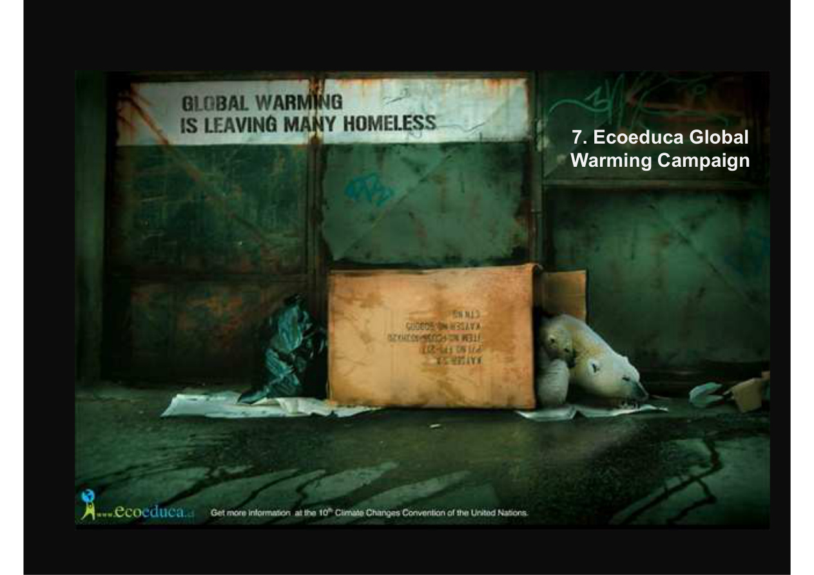
7. Ecoeduca Global
- •7. Ecoeduca Global Warming Campaign
This slide presents essential concepts in Lecture 01: 7. Ecoeduca Global. Specifically, it examines 7. Ecoeduca Global Warming Campaign. In the broader context of Course overview, sustainable development, environmental ads, global ecological awareness, and Dr. Kalam's 'Letter from 2070' highlighting extreme water scarcity and climate breakdown., mastering this material is critical for analyzing ecological tradeoffs, regulatory frameworks, and exam questions on environmental system dynamics.
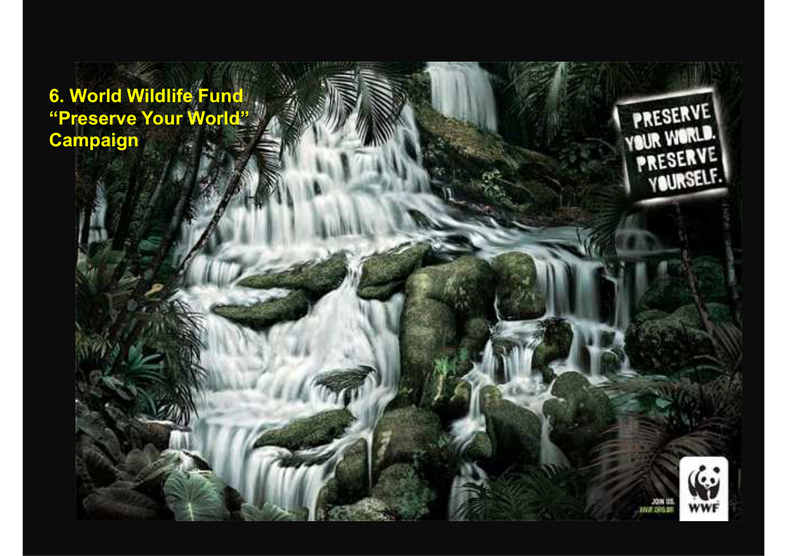
6. World Wildlife Fund
- •6. World Wildlife Fund “Preserve Your World” Campaign
This slide presents essential concepts in Lecture 01: 6. World Wildlife Fund. Specifically, it examines 6. World Wildlife Fund “Preserve Your World” Campaign. In the broader context of Course overview, sustainable development, environmental ads, global ecological awareness, and Dr. Kalam's 'Letter from 2070' highlighting extreme water scarcity and climate breakdown., mastering this material is critical for analyzing ecological tradeoffs, regulatory frameworks, and exam questions on environmental system dynamics.
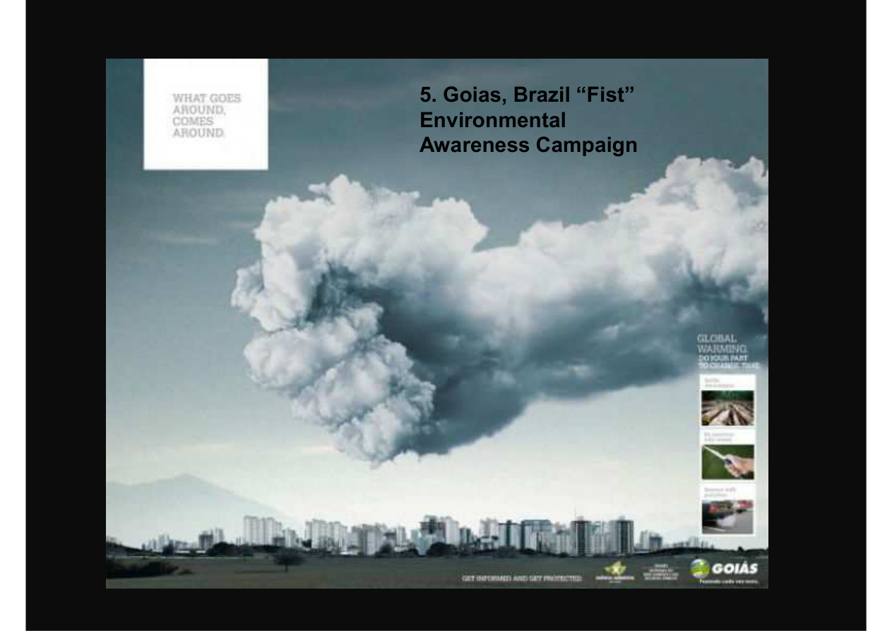
5. Goias, Brazil “Fist”
- •5. Goias, Brazil “Fist” Environmental Awareness Campaign
This slide presents essential concepts in Lecture 01: 5. Goias, Brazil “Fist”. Specifically, it examines 5. Goias, Brazil “Fist” Environmental Awareness Campaign. In the broader context of Course overview, sustainable development, environmental ads, global ecological awareness, and Dr. Kalam's 'Letter from 2070' highlighting extreme water scarcity and climate breakdown., mastering this material is critical for analyzing ecological tradeoffs, regulatory frameworks, and exam questions on environmental system dynamics.
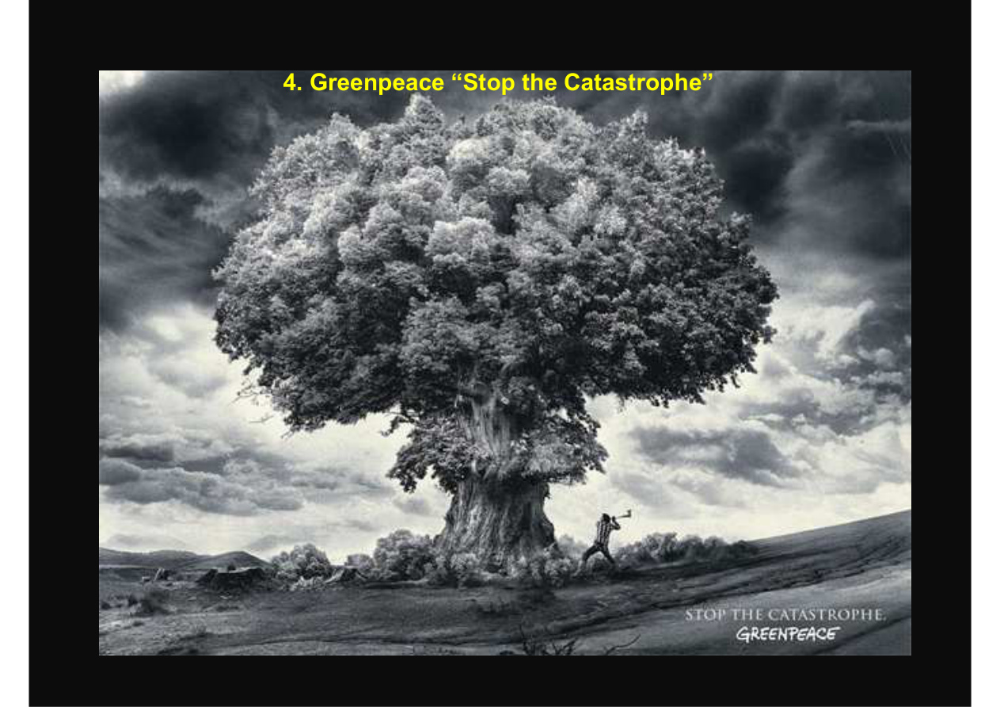
4. Greenpeace “Stop the Catastrophe”
- •4. Greenpeace “Stop the Catastrophe”
This slide presents essential concepts in Lecture 01: 4. Greenpeace “Stop the Catastrophe”. Specifically, it examines 4. Greenpeace “Stop the Catastrophe”. In the broader context of Course overview, sustainable development, environmental ads, global ecological awareness, and Dr. Kalam's 'Letter from 2070' highlighting extreme water scarcity and climate breakdown., mastering this material is critical for analyzing ecological tradeoffs, regulatory frameworks, and exam questions on environmental system dynamics.
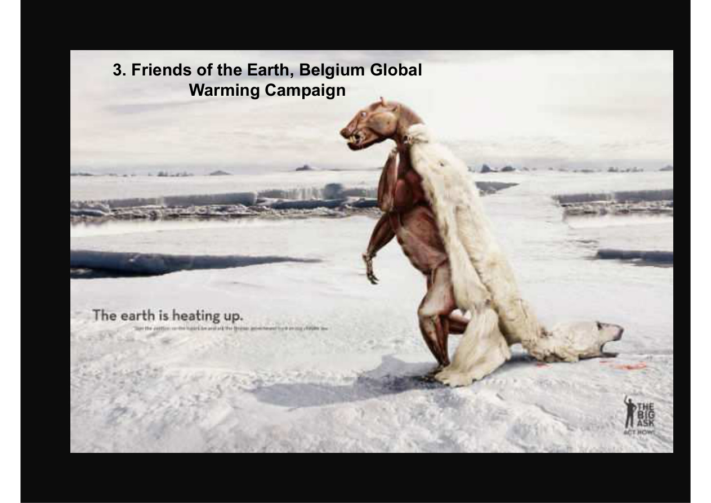
3. Friends of the Earth, Belgium Global
- •3. Friends of the Earth, Belgium Global Warming Campaign
This slide presents essential concepts in Lecture 01: 3. Friends of the Earth, Belgium Global. Specifically, it examines 3. Friends of the Earth, Belgium Global Warming Campaign. In the broader context of Course overview, sustainable development, environmental ads, global ecological awareness, and Dr. Kalam's 'Letter from 2070' highlighting extreme water scarcity and climate breakdown., mastering this material is critical for analyzing ecological tradeoffs, regulatory frameworks, and exam questions on environmental system dynamics.
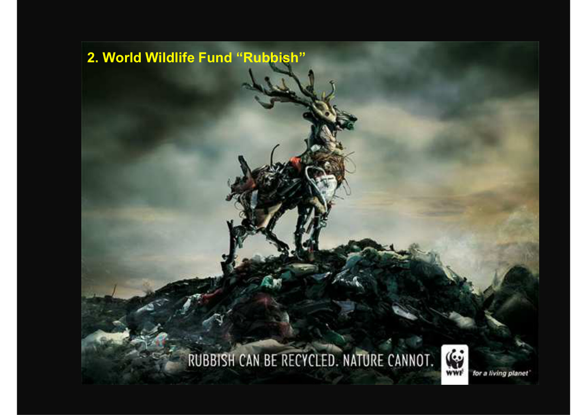
2. World Wildlife Fund “Rubbish”
- •2. World Wildlife Fund “Rubbish”
This slide presents essential concepts in Lecture 01: 2. World Wildlife Fund “Rubbish”. Specifically, it examines 2. World Wildlife Fund “Rubbish”. In the broader context of Course overview, sustainable development, environmental ads, global ecological awareness, and Dr. Kalam's 'Letter from 2070' highlighting extreme water scarcity and climate breakdown., mastering this material is critical for analyzing ecological tradeoffs, regulatory frameworks, and exam questions on environmental system dynamics.
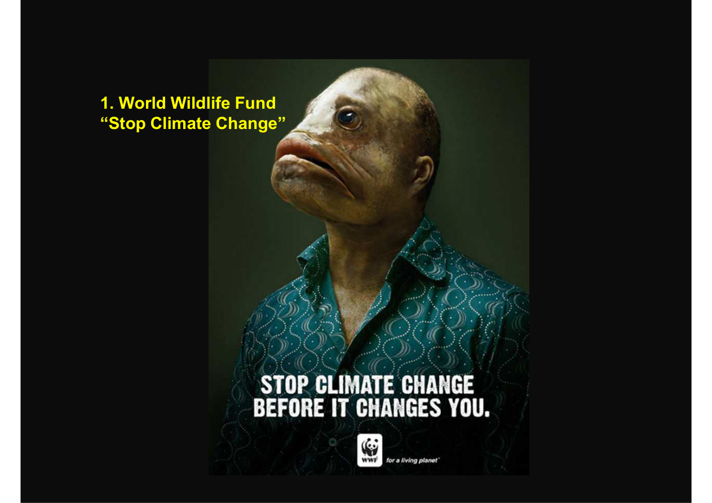
1. World Wildlife Fund
- •1. World Wildlife Fund “Stop Climate Change”
This slide presents essential concepts in Lecture 01: 1. World Wildlife Fund. Specifically, it examines 1. World Wildlife Fund “Stop Climate Change”. In the broader context of Course overview, sustainable development, environmental ads, global ecological awareness, and Dr. Kalam's 'Letter from 2070' highlighting extreme water scarcity and climate breakdown., mastering this material is critical for analyzing ecological tradeoffs, regulatory frameworks, and exam questions on environmental system dynamics.
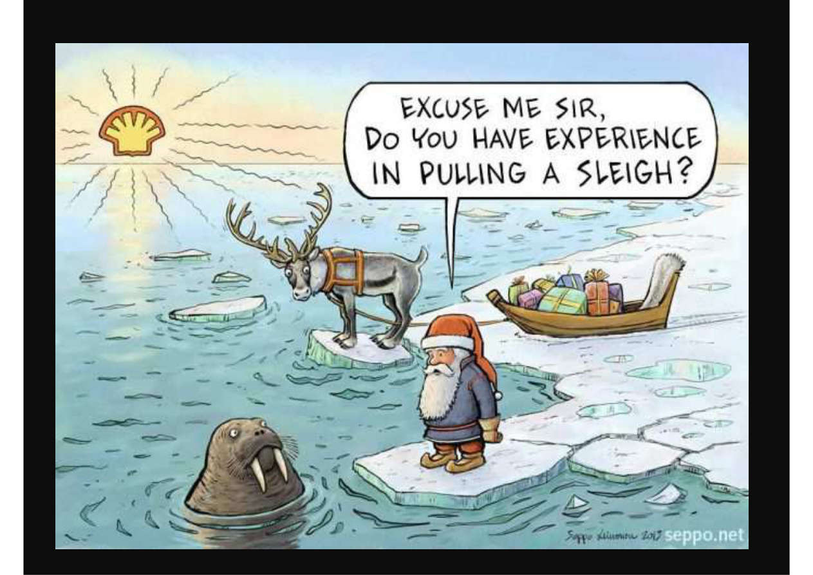
Slide 14
Visual figure / diagram presentation slide. Review the high-resolution render on the left.
This visual slide in Lecture 01 illustrates core structural mechanisms and empirical data for Slide 14. It provides essential visual context within the curriculum of Course overview, sustainable development, environmental ads, global ecological awareness, and Dr. Kalam's 'Letter from 2070' highlighting extreme water scarcity and climate breakdown., directly connecting theoretical principles with real-world environmental technology observations.
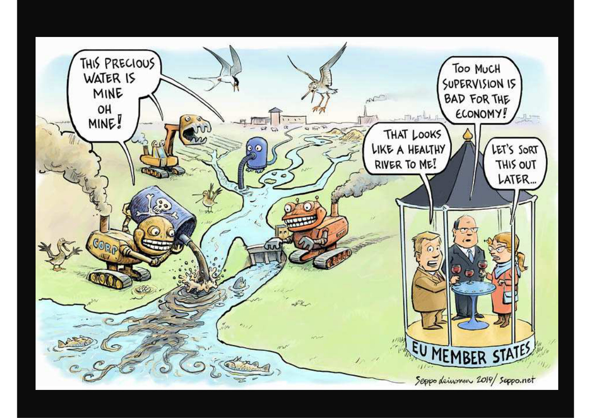
Slide 15
Visual figure / diagram presentation slide. Review the high-resolution render on the left.
This visual slide in Lecture 01 illustrates core structural mechanisms and empirical data for Slide 15. It provides essential visual context within the curriculum of Course overview, sustainable development, environmental ads, global ecological awareness, and Dr. Kalam's 'Letter from 2070' highlighting extreme water scarcity and climate breakdown., directly connecting theoretical principles with real-world environmental technology observations.
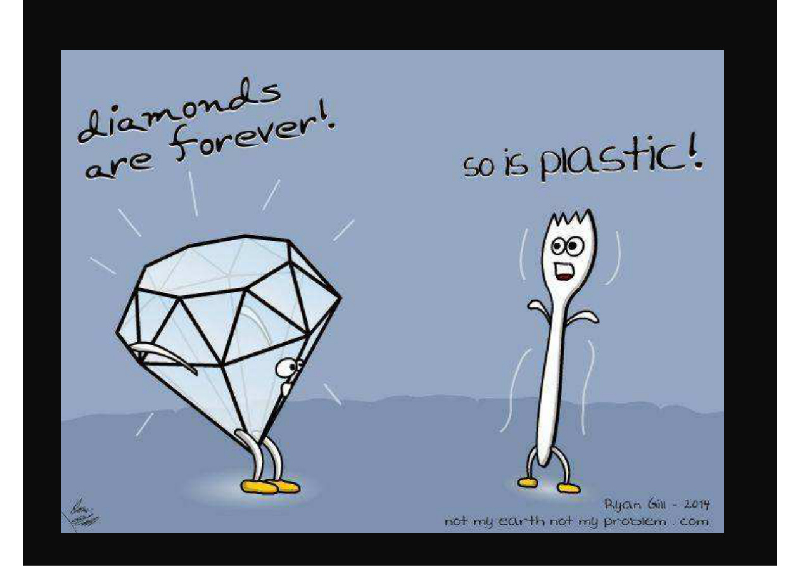
Slide 16
Visual figure / diagram presentation slide. Review the high-resolution render on the left.
This visual slide in Lecture 01 illustrates core structural mechanisms and empirical data for Slide 16. It provides essential visual context within the curriculum of Course overview, sustainable development, environmental ads, global ecological awareness, and Dr. Kalam's 'Letter from 2070' highlighting extreme water scarcity and climate breakdown., directly connecting theoretical principles with real-world environmental technology observations.
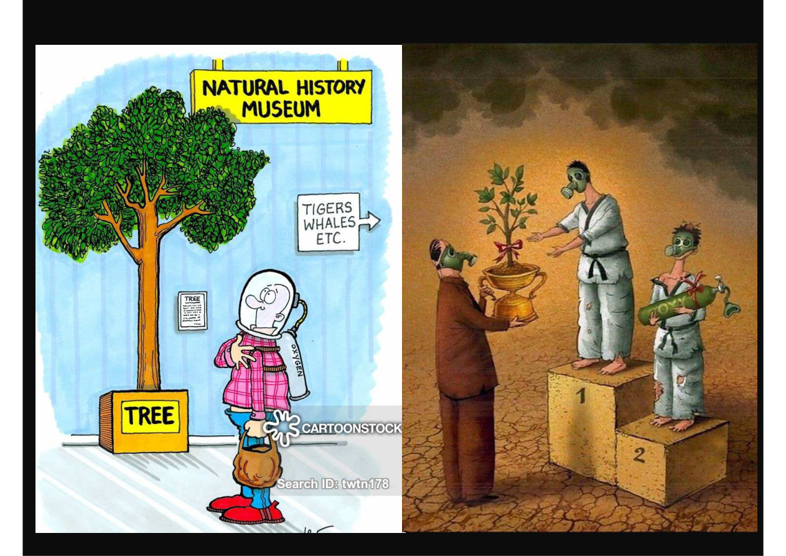
Slide 17
Visual figure / diagram presentation slide. Review the high-resolution render on the left.
This visual slide in Lecture 01 illustrates core structural mechanisms and empirical data for Slide 17. It provides essential visual context within the curriculum of Course overview, sustainable development, environmental ads, global ecological awareness, and Dr. Kalam's 'Letter from 2070' highlighting extreme water scarcity and climate breakdown., directly connecting theoretical principles with real-world environmental technology observations.
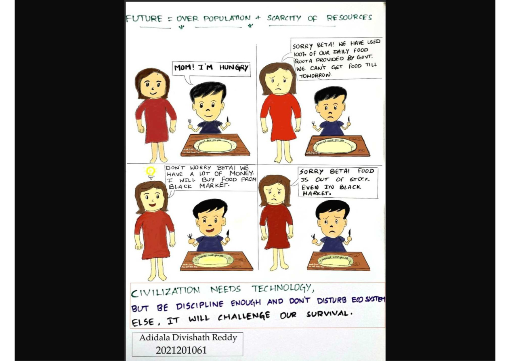
Slide 18
Visual figure / diagram presentation slide. Review the high-resolution render on the left.
This visual slide in Lecture 01 illustrates core structural mechanisms and empirical data for Slide 18. It provides essential visual context within the curriculum of Course overview, sustainable development, environmental ads, global ecological awareness, and Dr. Kalam's 'Letter from 2070' highlighting extreme water scarcity and climate breakdown., directly connecting theoretical principles with real-world environmental technology observations.
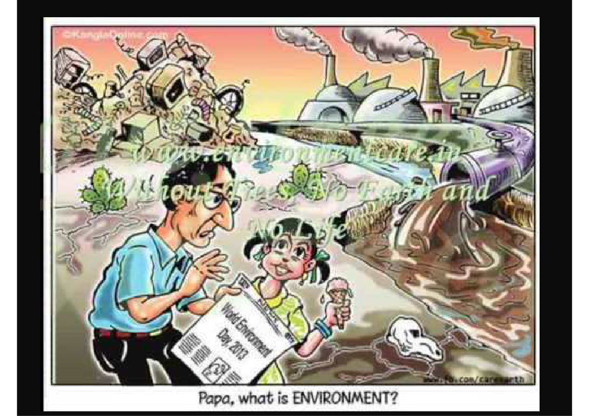
Slide 19
Visual figure / diagram presentation slide. Review the high-resolution render on the left.
This visual slide in Lecture 01 illustrates core structural mechanisms and empirical data for Slide 19. It provides essential visual context within the curriculum of Course overview, sustainable development, environmental ads, global ecological awareness, and Dr. Kalam's 'Letter from 2070' highlighting extreme water scarcity and climate breakdown., directly connecting theoretical principles with real-world environmental technology observations.
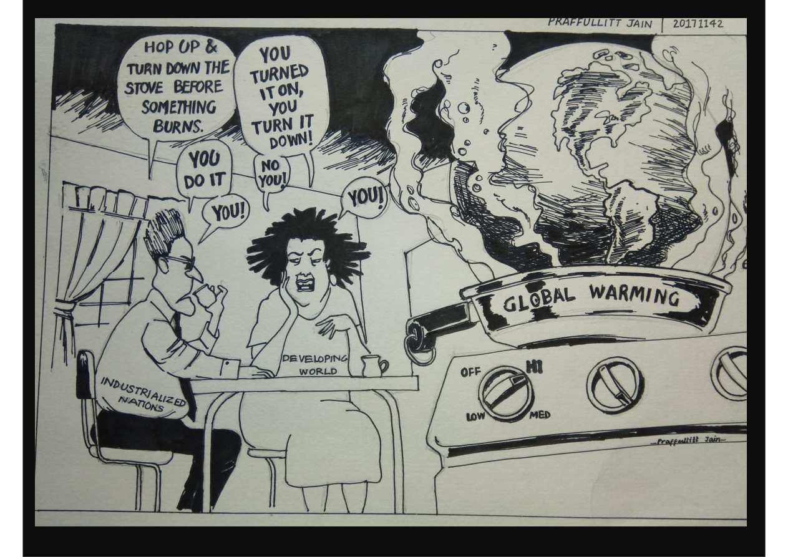
Slide 20
Visual figure / diagram presentation slide. Review the high-resolution render on the left.
This visual slide in Lecture 01 illustrates core structural mechanisms and empirical data for Slide 20. It provides essential visual context within the curriculum of Course overview, sustainable development, environmental ads, global ecological awareness, and Dr. Kalam's 'Letter from 2070' highlighting extreme water scarcity and climate breakdown., directly connecting theoretical principles with real-world environmental technology observations.
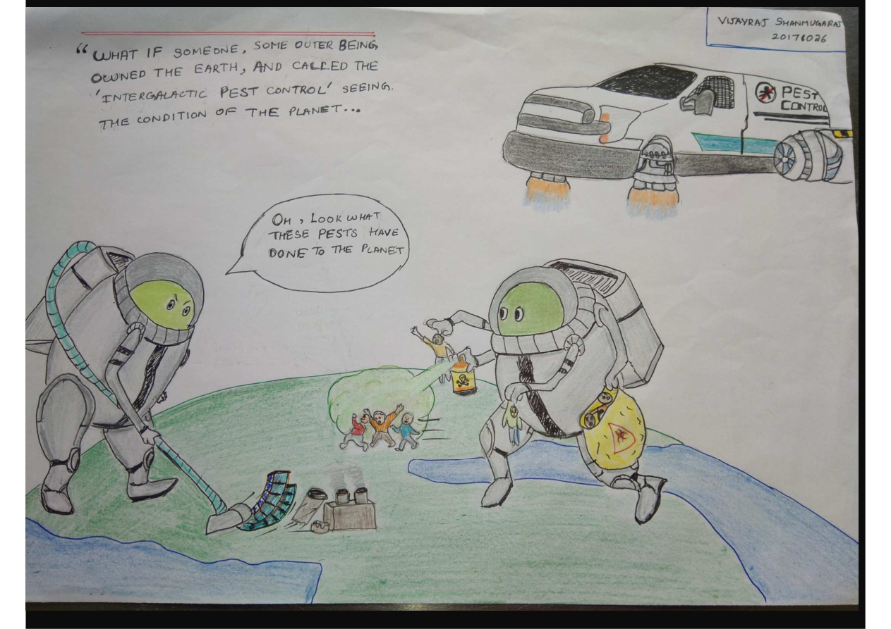
Slide 21
Visual figure / diagram presentation slide. Review the high-resolution render on the left.
This visual slide in Lecture 01 illustrates core structural mechanisms and empirical data for Slide 21. It provides essential visual context within the curriculum of Course overview, sustainable development, environmental ads, global ecological awareness, and Dr. Kalam's 'Letter from 2070' highlighting extreme water scarcity and climate breakdown., directly connecting theoretical principles with real-world environmental technology observations.
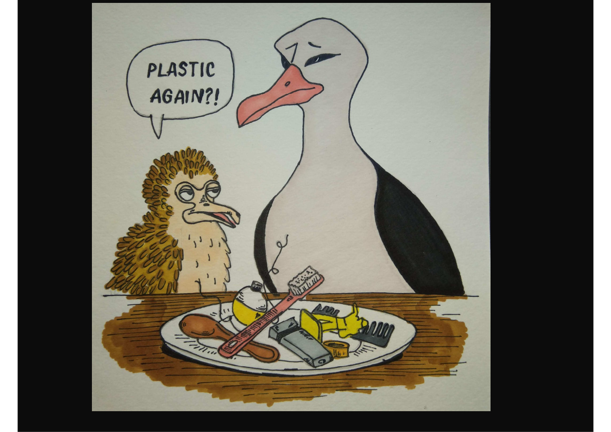
Slide 22
Visual figure / diagram presentation slide. Review the high-resolution render on the left.
This visual slide in Lecture 01 illustrates core structural mechanisms and empirical data for Slide 22. It provides essential visual context within the curriculum of Course overview, sustainable development, environmental ads, global ecological awareness, and Dr. Kalam's 'Letter from 2070' highlighting extreme water scarcity and climate breakdown., directly connecting theoretical principles with real-world environmental technology observations.
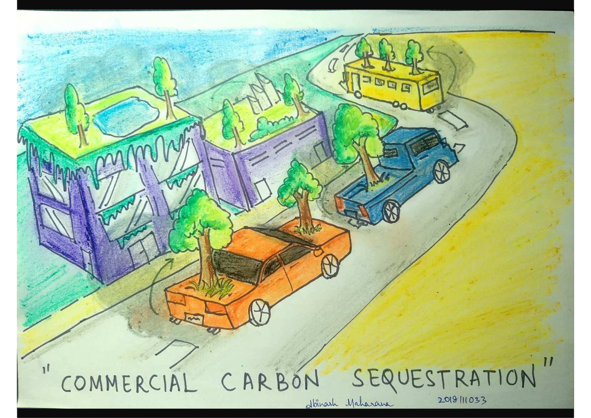
Slide 23
Visual figure / diagram presentation slide. Review the high-resolution render on the left.
This visual slide in Lecture 01 illustrates core structural mechanisms and empirical data for Slide 23. It provides essential visual context within the curriculum of Course overview, sustainable development, environmental ads, global ecological awareness, and Dr. Kalam's 'Letter from 2070' highlighting extreme water scarcity and climate breakdown., directly connecting theoretical principles with real-world environmental technology observations.
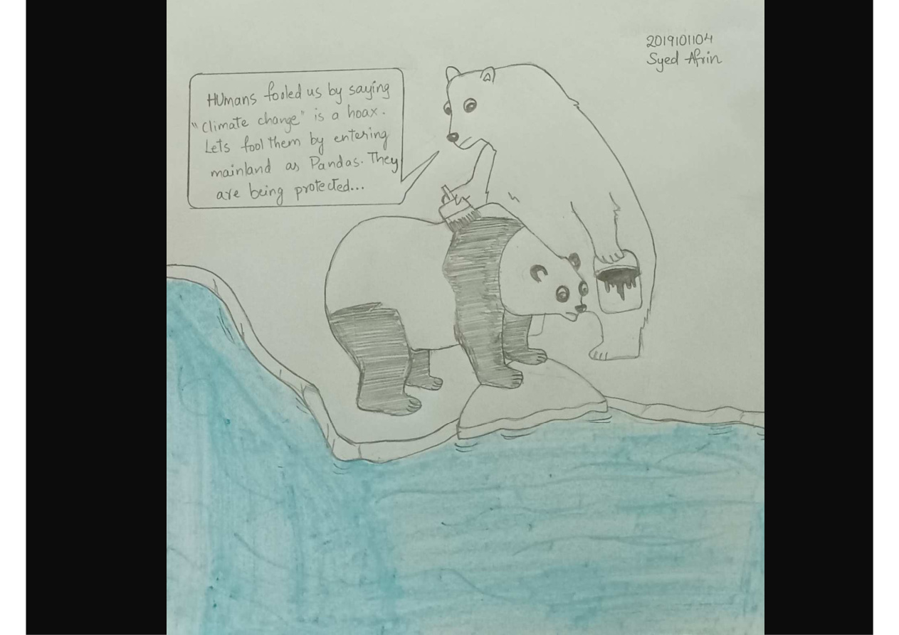
Slide 24
Visual figure / diagram presentation slide. Review the high-resolution render on the left.
This visual slide in Lecture 01 illustrates core structural mechanisms and empirical data for Slide 24. It provides essential visual context within the curriculum of Course overview, sustainable development, environmental ads, global ecological awareness, and Dr. Kalam's 'Letter from 2070' highlighting extreme water scarcity and climate breakdown., directly connecting theoretical principles with real-world environmental technology observations.
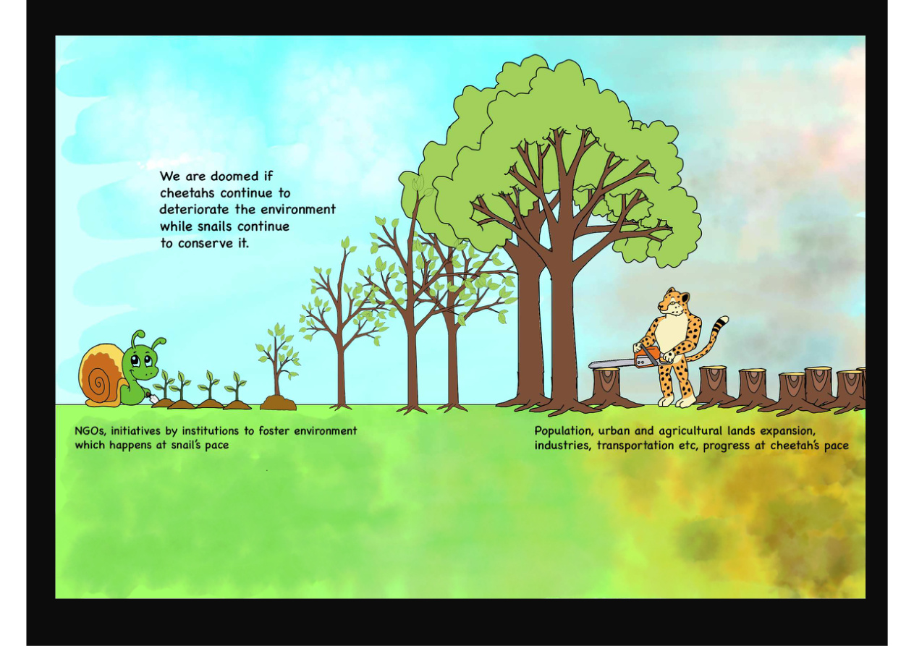
Slide 25
Visual figure / diagram presentation slide. Review the high-resolution render on the left.
This visual slide in Lecture 01 illustrates core structural mechanisms and empirical data for Slide 25. It provides essential visual context within the curriculum of Course overview, sustainable development, environmental ads, global ecological awareness, and Dr. Kalam's 'Letter from 2070' highlighting extreme water scarcity and climate breakdown., directly connecting theoretical principles with real-world environmental technology observations.
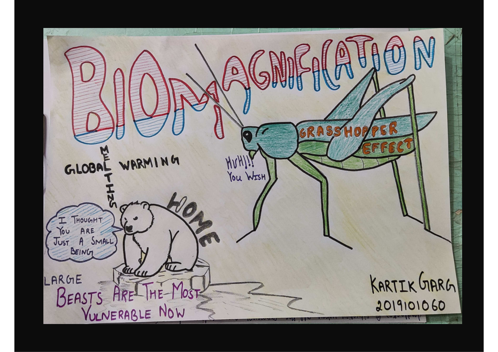
Slide 26
Visual figure / diagram presentation slide. Review the high-resolution render on the left.
This visual slide in Lecture 01 illustrates core structural mechanisms and empirical data for Slide 26. It provides essential visual context within the curriculum of Course overview, sustainable development, environmental ads, global ecological awareness, and Dr. Kalam's 'Letter from 2070' highlighting extreme water scarcity and climate breakdown., directly connecting theoretical principles with real-world environmental technology observations.
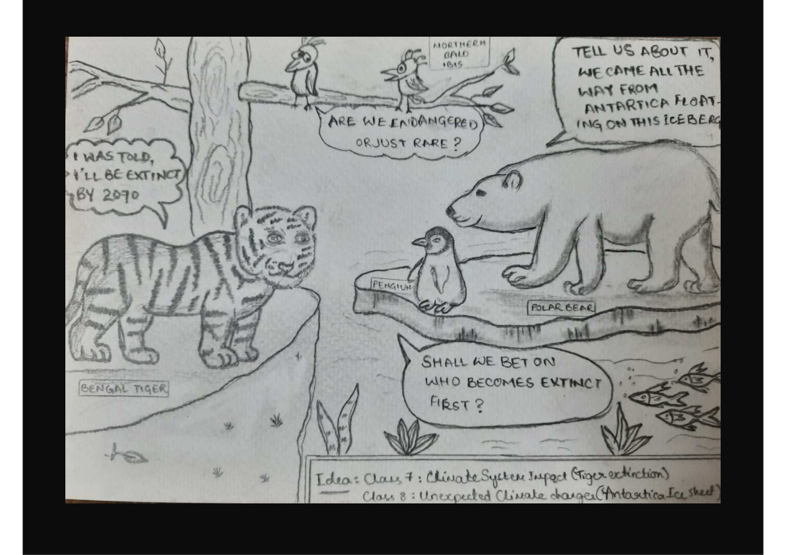
Slide 27
Visual figure / diagram presentation slide. Review the high-resolution render on the left.
This visual slide in Lecture 01 illustrates core structural mechanisms and empirical data for Slide 27. It provides essential visual context within the curriculum of Course overview, sustainable development, environmental ads, global ecological awareness, and Dr. Kalam's 'Letter from 2070' highlighting extreme water scarcity and climate breakdown., directly connecting theoretical principles with real-world environmental technology observations.
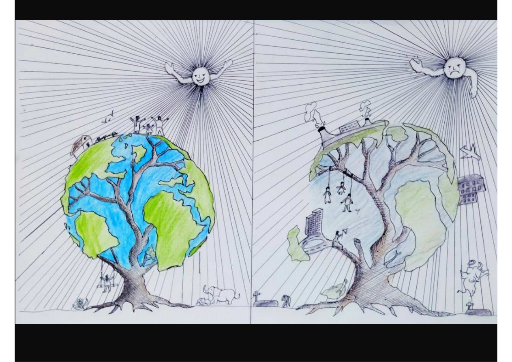
Slide 28
Visual figure / diagram presentation slide. Review the high-resolution render on the left.
This visual slide in Lecture 01 illustrates core structural mechanisms and empirical data for Slide 28. It provides essential visual context within the curriculum of Course overview, sustainable development, environmental ads, global ecological awareness, and Dr. Kalam's 'Letter from 2070' highlighting extreme water scarcity and climate breakdown., directly connecting theoretical principles with real-world environmental technology observations.
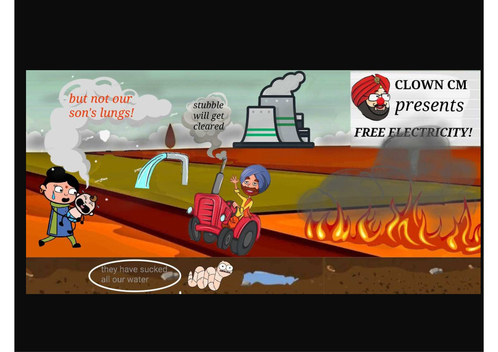
Slide 29
Visual figure / diagram presentation slide. Review the high-resolution render on the left.
This visual slide in Lecture 01 illustrates core structural mechanisms and empirical data for Slide 29. It provides essential visual context within the curriculum of Course overview, sustainable development, environmental ads, global ecological awareness, and Dr. Kalam's 'Letter from 2070' highlighting extreme water scarcity and climate breakdown., directly connecting theoretical principles with real-world environmental technology observations.
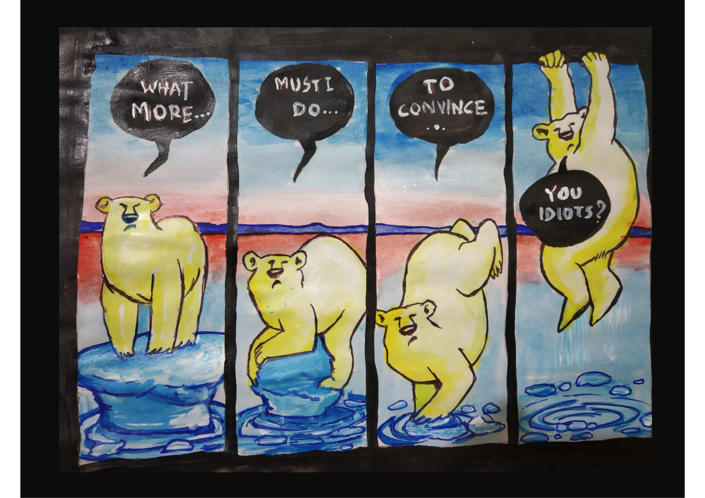
Slide 30
Visual figure / diagram presentation slide. Review the high-resolution render on the left.
This visual slide in Lecture 01 illustrates core structural mechanisms and empirical data for Slide 30. It provides essential visual context within the curriculum of Course overview, sustainable development, environmental ads, global ecological awareness, and Dr. Kalam's 'Letter from 2070' highlighting extreme water scarcity and climate breakdown., directly connecting theoretical principles with real-world environmental technology observations.
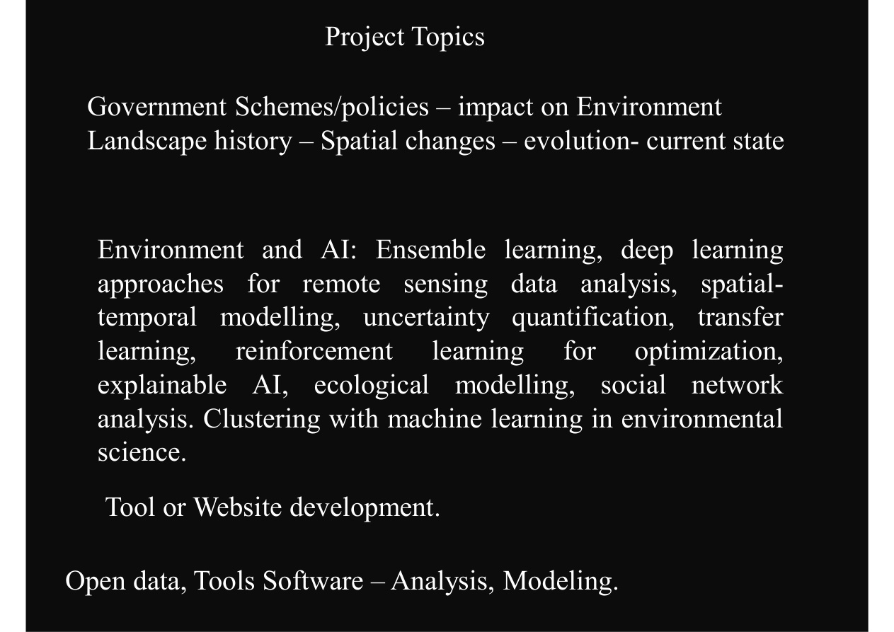
Government Schemes/policies – impact on Environment
- •Government Schemes/policies – impact on Environment Landscape history – Spatial changes – evolution- current state Project Topics Environment and AI: Ensemble learning, deep learning
This slide presents essential concepts in Lecture 01: Government Schemes/policies – impact on Environment. Specifically, it examines Government Schemes/policies – impact on Environment Landscape history – Spatial changes – evolution- current state Project Topics Environment and AI: Ensemble learning, deep learning. In the broader context of Course overview, sustainable development, environmental ads, global ecological awareness, and Dr. Kalam's 'Letter from 2070' highlighting extreme water scarcity and climate breakdown., mastering this material is critical for analyzing ecological tradeoffs, regulatory frameworks, and exam questions on environmental system dynamics.
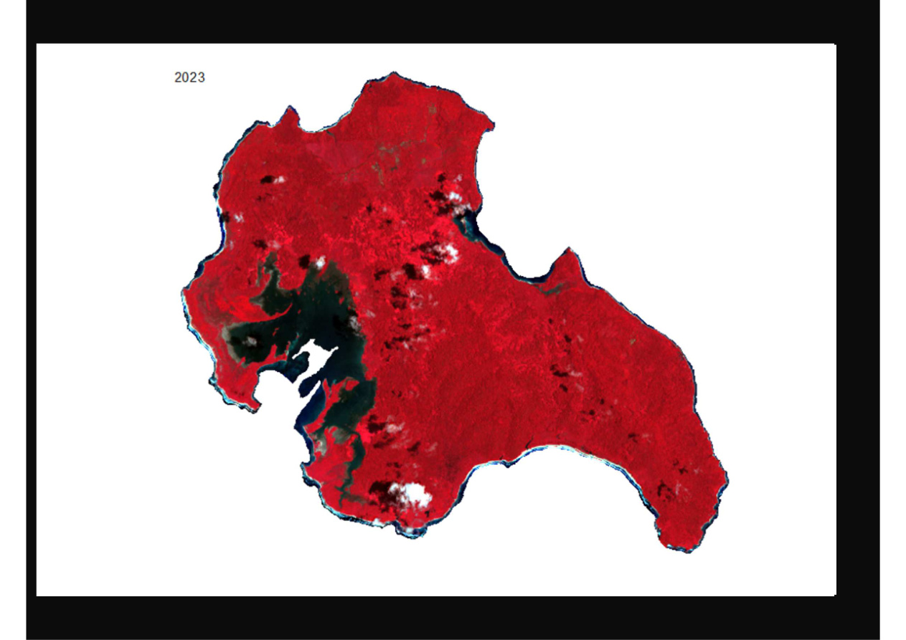
Slide 32
Visual figure / diagram presentation slide. Review the high-resolution render on the left.
This visual slide in Lecture 01 illustrates core structural mechanisms and empirical data for Slide 32. It provides essential visual context within the curriculum of Course overview, sustainable development, environmental ads, global ecological awareness, and Dr. Kalam's 'Letter from 2070' highlighting extreme water scarcity and climate breakdown., directly connecting theoretical principles with real-world environmental technology observations.
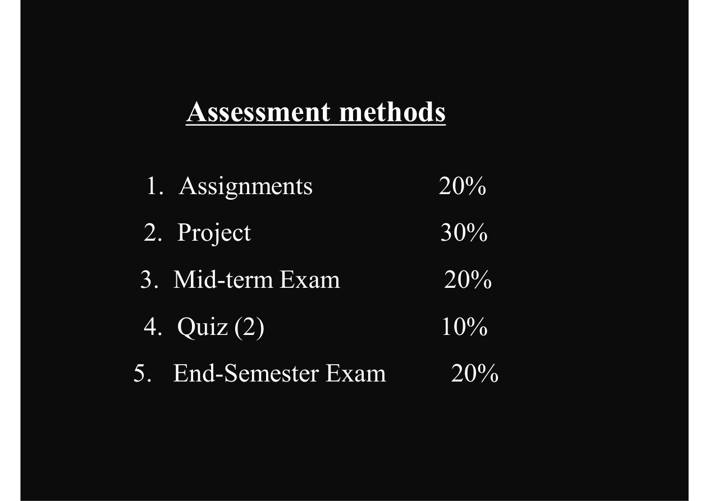
Assessment methods
- •Assessment methods 1. Assignments 20% 2. Project
This slide presents essential concepts in Lecture 01: Assessment methods. Specifically, it examines Assessment methods 1. Assignments 20% 2. Project. In the broader context of Course overview, sustainable development, environmental ads, global ecological awareness, and Dr. Kalam's 'Letter from 2070' highlighting extreme water scarcity and climate breakdown., mastering this material is critical for analyzing ecological tradeoffs, regulatory frameworks, and exam questions on environmental system dynamics.
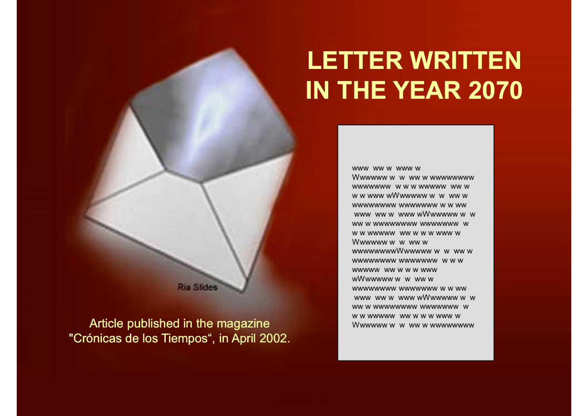
LETTER WRITTEN
- •LETTER WRITTEN IN THE YEAR 2070 LETTER WRITTEN IN THE YEAR 2070
This slide is part of the evocative narrative 'Letter Written in the Year 2070', highlighting the catastrophic social and physiological realities of unchecked environmental degradation. In this projected future, severe ozone depletion, complete aquifer exhaustion, and air taxation ($137\,\text{m}^3\text{/day}$) force humanity into daily survival struggles, illustrating the paramount importance of intergenerational equity and preemptive decarbonization.
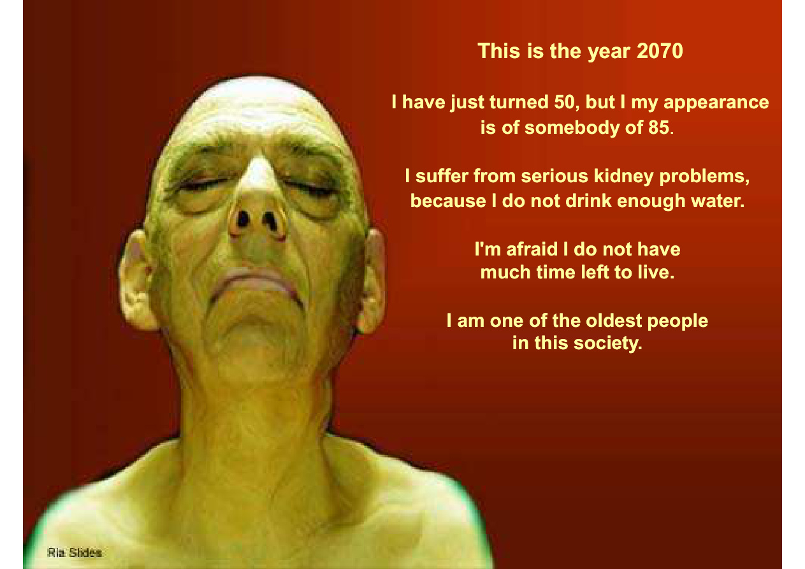
This is the year 2070
- •This is the year 2070 I have just turned 50, but I my appearance is of somebody of 85. I suffer from serious kidney problems,
This slide is part of the evocative narrative 'Letter Written in the Year 2070', highlighting the catastrophic social and physiological realities of unchecked environmental degradation. In this projected future, severe ozone depletion, complete aquifer exhaustion, and air taxation ($137\,\text{m}^3\text{/day}$) force humanity into daily survival struggles, illustrating the paramount importance of intergenerational equity and preemptive decarbonization.
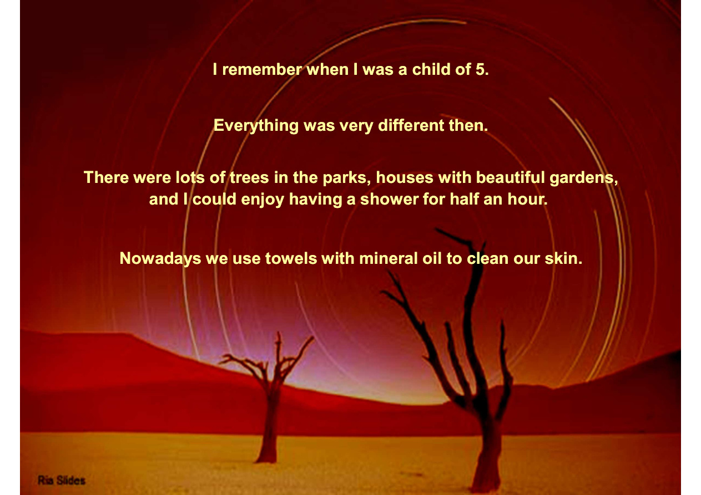
I remember when I was a child of 5.
- •I remember when I was a child of 5. I remember when I was a child of 5. There were lots of trees in the parks, houses with beautiful gardens, and I could enjoy having a shower for half an hour.
This slide presents essential concepts in Lecture 01: I remember when I was a child of 5.. Specifically, it examines I remember when I was a child of 5. I remember when I was a child of 5. There were lots of trees in the parks, houses with beautiful gardens, and I could enjoy having a shower for half an hour.. In the broader context of Course overview, sustainable development, environmental ads, global ecological awareness, and Dr. Kalam's 'Letter from 2070' highlighting extreme water scarcity and climate breakdown., mastering this material is critical for analyzing ecological tradeoffs, regulatory frameworks, and exam questions on environmental system dynamics.
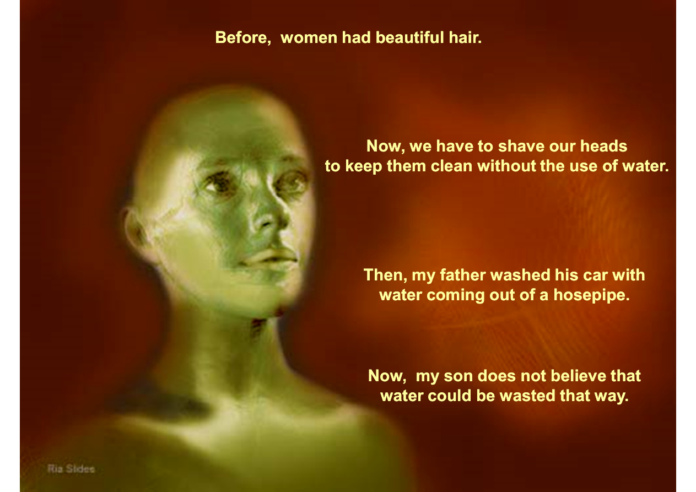
Before, women had beautiful hair.
- •Before, women had beautiful hair. Before, women had beautiful hair. Then, my father washed his car with water coming out of a hosepipe.
This slide presents essential concepts in Lecture 01: Before, women had beautiful hair.. Specifically, it examines Before, women had beautiful hair. Before, women had beautiful hair. Then, my father washed his car with water coming out of a hosepipe.. In the broader context of Course overview, sustainable development, environmental ads, global ecological awareness, and Dr. Kalam's 'Letter from 2070' highlighting extreme water scarcity and climate breakdown., mastering this material is critical for analyzing ecological tradeoffs, regulatory frameworks, and exam questions on environmental system dynamics.
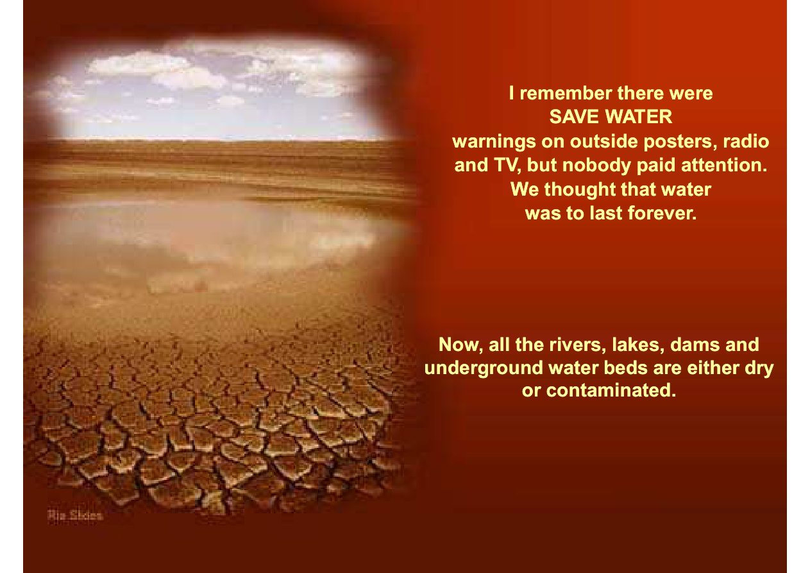
I remember there were
- •I remember there were SAVE WATER warnings on outside posters, radio and TV, but nobody paid attention.
This slide presents essential concepts in Lecture 01: I remember there were. Specifically, it examines I remember there were SAVE WATER warnings on outside posters, radio and TV, but nobody paid attention.. In the broader context of Course overview, sustainable development, environmental ads, global ecological awareness, and Dr. Kalam's 'Letter from 2070' highlighting extreme water scarcity and climate breakdown., mastering this material is critical for analyzing ecological tradeoffs, regulatory frameworks, and exam questions on environmental system dynamics.
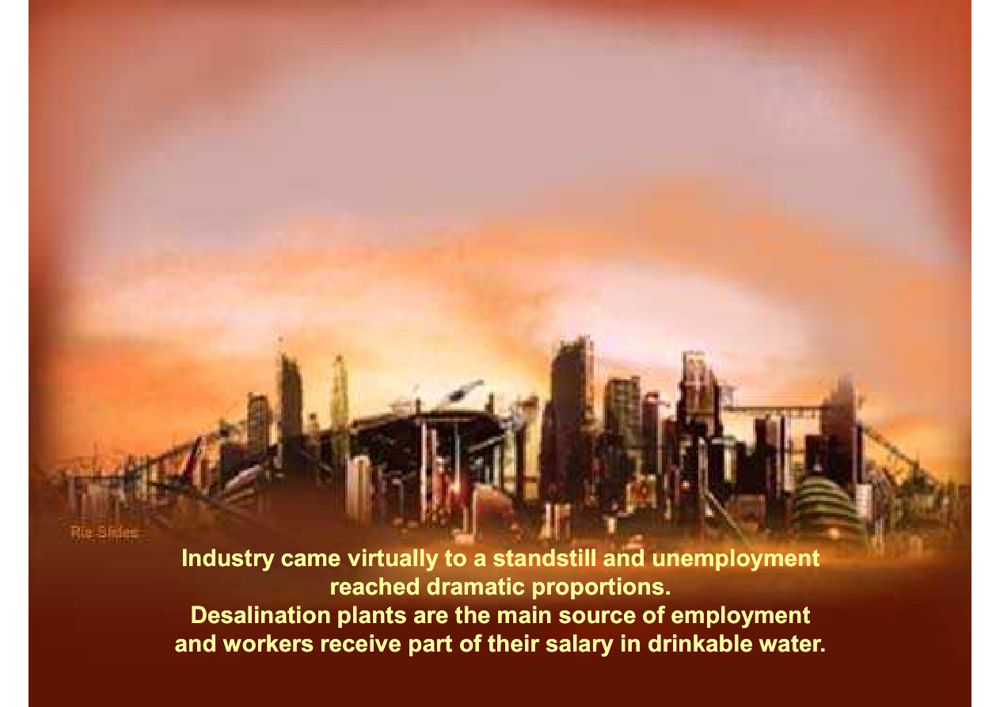
Industry came virtually to a standstill and unemployment
- •Industry came virtually to a standstill and unemployment reached dramatic proportions. Desalination plants are the main source of employment and workers receive part of their salary in drinkable water.
This slide presents essential concepts in Lecture 01: Industry came virtually to a standstill and unemployment. Specifically, it examines Industry came virtually to a standstill and unemployment reached dramatic proportions. Desalination plants are the main source of employment and workers receive part of their salary in drinkable water.. In the broader context of Course overview, sustainable development, environmental ads, global ecological awareness, and Dr. Kalam's 'Letter from 2070' highlighting extreme water scarcity and climate breakdown., mastering this material is critical for analyzing ecological tradeoffs, regulatory frameworks, and exam questions on environmental system dynamics.
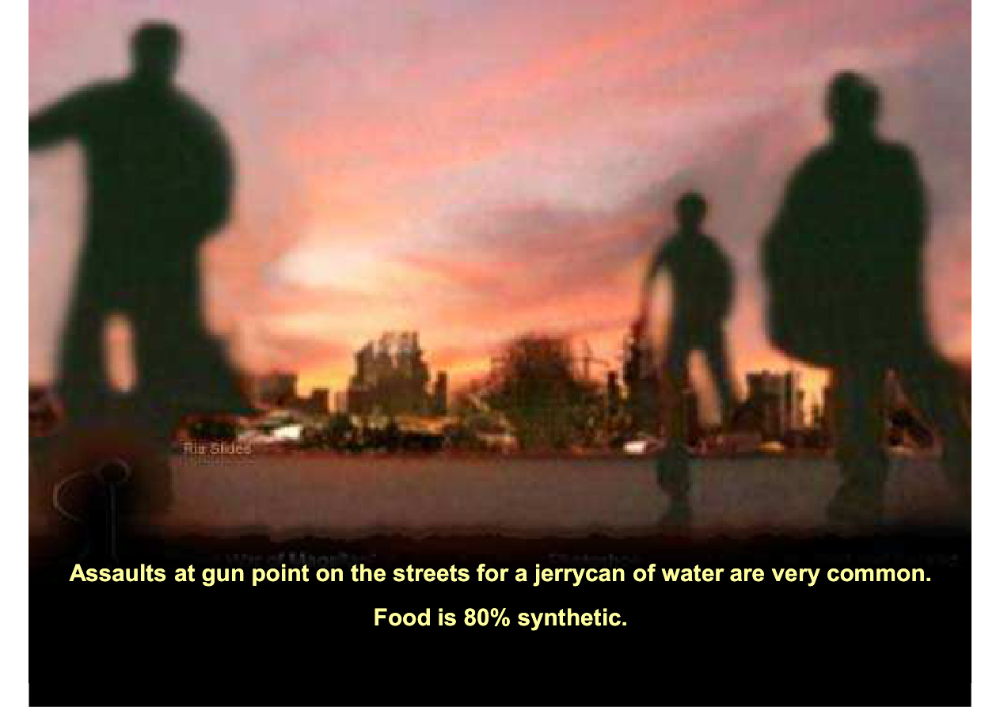
Assaults at gun point on the streets for a jerrycan of water a...
- •Assaults at gun point on the streets for a jerrycan of water are very common. Assaults at gun point on the streets for a jerrycan of water are very common. Food is 80% synthetic. Food is 80% synthetic.
This slide presents essential concepts in Lecture 01: Assaults at gun point on the streets for a jerrycan of water a.... Specifically, it examines Assaults at gun point on the streets for a jerrycan of water are very common. Assaults at gun point on the streets for a jerrycan of water are very common. Food is 80% synthetic. Food is 80% synthetic.. In the broader context of Course overview, sustainable development, environmental ads, global ecological awareness, and Dr. Kalam's 'Letter from 2070' highlighting extreme water scarcity and climate breakdown., mastering this material is critical for analyzing ecological tradeoffs, regulatory frameworks, and exam questions on environmental system dynamics.
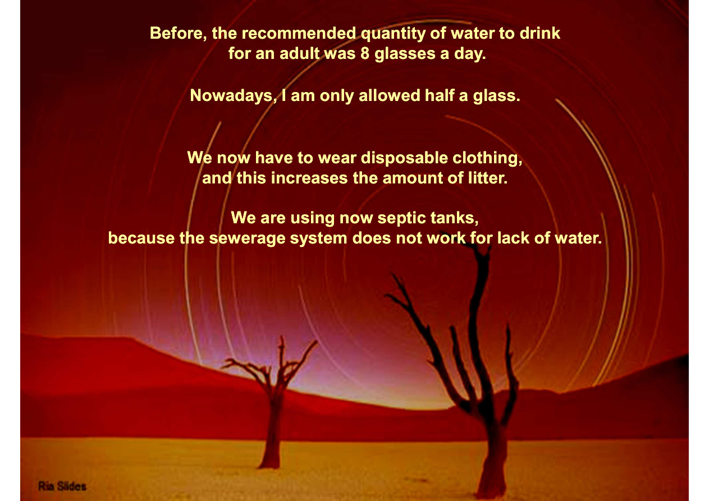
Before, the recommended quantity of water to drink
- •Before, the recommended quantity of water to drink for an adult was 8 glasses a day. Nowadays, I am only allowed half a glass. Before, the recommended quantity of water to drink
This slide presents essential concepts in Lecture 01: Before, the recommended quantity of water to drink. Specifically, it examines Before, the recommended quantity of water to drink for an adult was 8 glasses a day. Nowadays, I am only allowed half a glass. Before, the recommended quantity of water to drink. In the broader context of Course overview, sustainable development, environmental ads, global ecological awareness, and Dr. Kalam's 'Letter from 2070' highlighting extreme water scarcity and climate breakdown., mastering this material is critical for analyzing ecological tradeoffs, regulatory frameworks, and exam questions on environmental system dynamics.
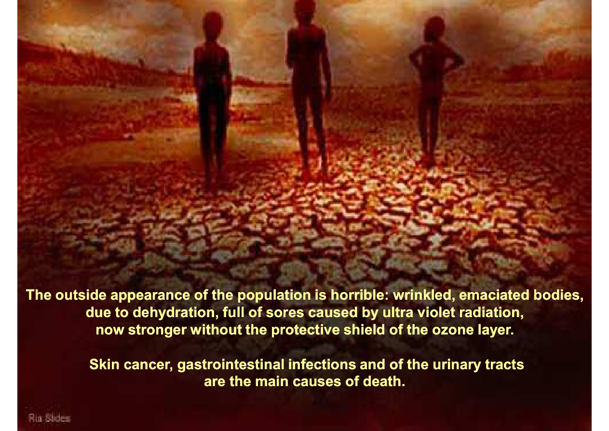
The outside appearance of the population is horrible: wrinkled...
- •The outside appearance of the population is horrible: wrinkled, emaciated bodies, due to dehydration, full of sores caused by ultra violet radiation, now stronger without the protective shield of the ozone layer. Skin cancer, gastrointestinal infections and of the urinary tracts
This slide presents essential concepts in Lecture 01: The outside appearance of the population is horrible: wrinkled.... Specifically, it examines The outside appearance of the population is horrible: wrinkled, emaciated bodies, due to dehydration, full of sores caused by ultra violet radiation, now stronger without the protective shield of the ozone layer. Skin cancer, gastrointestinal infections and of the urinary tracts. In the broader context of Course overview, sustainable development, environmental ads, global ecological awareness, and Dr. Kalam's 'Letter from 2070' highlighting extreme water scarcity and climate breakdown., mastering this material is critical for analyzing ecological tradeoffs, regulatory frameworks, and exam questions on environmental system dynamics.
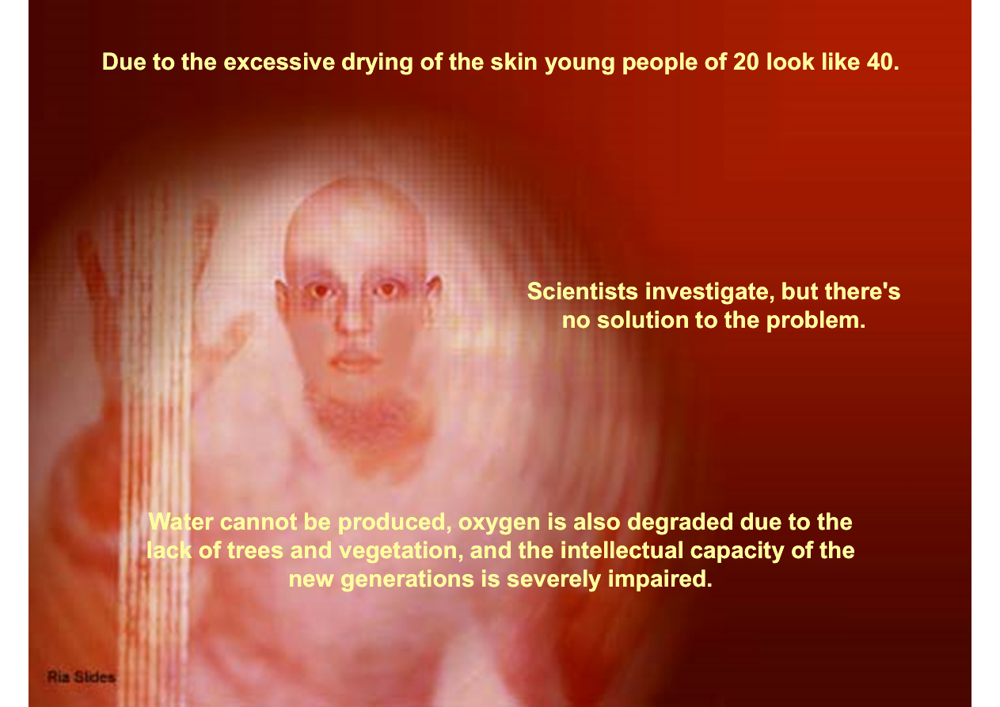
Due to the excessive drying of the skin young people of 20 loo...
- •Due to the excessive drying of the skin young people of 20 look like 40. Due to the excessive drying of the skin young people of 20 look like 40. Water cannot be produced, oxygen is also degraded due to the lack of trees and vegetation, and the intellectual capacity of the
This slide presents essential concepts in Lecture 01: Due to the excessive drying of the skin young people of 20 loo.... Specifically, it examines Due to the excessive drying of the skin young people of 20 look like 40. Due to the excessive drying of the skin young people of 20 look like 40. Water cannot be produced, oxygen is also degraded due to the lack of trees and vegetation, and the intellectual capacity of the. In the broader context of Course overview, sustainable development, environmental ads, global ecological awareness, and Dr. Kalam's 'Letter from 2070' highlighting extreme water scarcity and climate breakdown., mastering this material is critical for analyzing ecological tradeoffs, regulatory frameworks, and exam questions on environmental system dynamics.
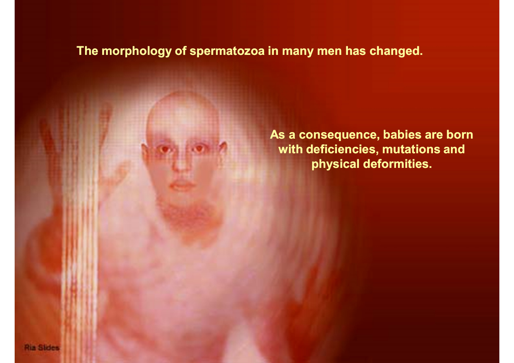
The morphology of spermatozoa in many men has changed.
- •The morphology of spermatozoa in many men has changed. The morphology of spermatozoa in many men has changed. As a consequence, babies are born with deficiencies, mutations and
This slide presents essential concepts in Lecture 01: The morphology of spermatozoa in many men has changed.. Specifically, it examines The morphology of spermatozoa in many men has changed. The morphology of spermatozoa in many men has changed. As a consequence, babies are born with deficiencies, mutations and. In the broader context of Course overview, sustainable development, environmental ads, global ecological awareness, and Dr. Kalam's 'Letter from 2070' highlighting extreme water scarcity and climate breakdown., mastering this material is critical for analyzing ecological tradeoffs, regulatory frameworks, and exam questions on environmental system dynamics.
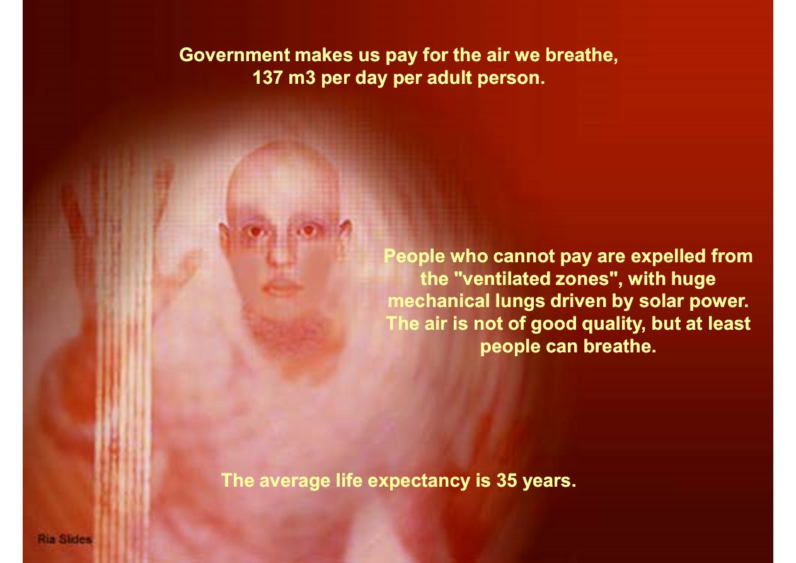
Government makes us pay for the air we breathe,
- •Government makes us pay for the air we breathe, 137 m3 per day per adult person. Government makes us pay for the air we breathe, 137 m3 per day per adult person.
This slide presents essential concepts in Lecture 01: Government makes us pay for the air we breathe,. Specifically, it examines Government makes us pay for the air we breathe, 137 m3 per day per adult person. Government makes us pay for the air we breathe, 137 m3 per day per adult person.. In the broader context of Course overview, sustainable development, environmental ads, global ecological awareness, and Dr. Kalam's 'Letter from 2070' highlighting extreme water scarcity and climate breakdown., mastering this material is critical for analyzing ecological tradeoffs, regulatory frameworks, and exam questions on environmental system dynamics.
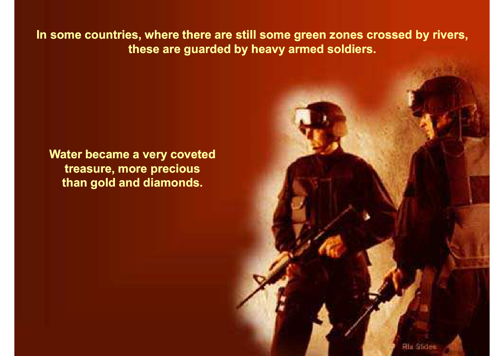
In some countries, where there are still some green zones cros...
- •In some countries, where there are still some green zones crossed by rivers, these are guarded by heavy armed soldiers. In some countries, where there are still some green zones crossed by rivers, these are guarded by heavy armed soldiers.
This slide presents essential concepts in Lecture 01: In some countries, where there are still some green zones cros.... Specifically, it examines In some countries, where there are still some green zones crossed by rivers, these are guarded by heavy armed soldiers. In some countries, where there are still some green zones crossed by rivers, these are guarded by heavy armed soldiers.. In the broader context of Course overview, sustainable development, environmental ads, global ecological awareness, and Dr. Kalam's 'Letter from 2070' highlighting extreme water scarcity and climate breakdown., mastering this material is critical for analyzing ecological tradeoffs, regulatory frameworks, and exam questions on environmental system dynamics.
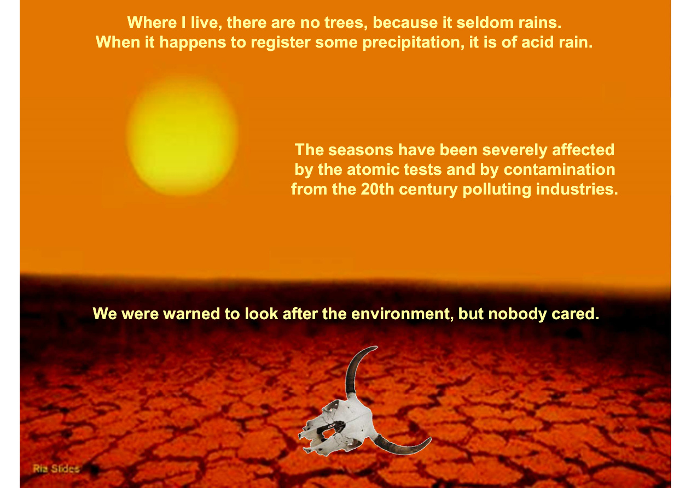
Where I live, there are no trees, because it seldom rains.
- •Where I live, there are no trees, because it seldom rains. When it happens to register some precipitation, it is of acid rain. Where I live, there are no trees, because it seldom rains. When it happens to register some precipitation, it is of acid rain.
This slide presents essential concepts in Lecture 01: Where I live, there are no trees, because it seldom rains.. Specifically, it examines Where I live, there are no trees, because it seldom rains. When it happens to register some precipitation, it is of acid rain. Where I live, there are no trees, because it seldom rains. When it happens to register some precipitation, it is of acid rain.. In the broader context of Course overview, sustainable development, environmental ads, global ecological awareness, and Dr. Kalam's 'Letter from 2070' highlighting extreme water scarcity and climate breakdown., mastering this material is critical for analyzing ecological tradeoffs, regulatory frameworks, and exam questions on environmental system dynamics.
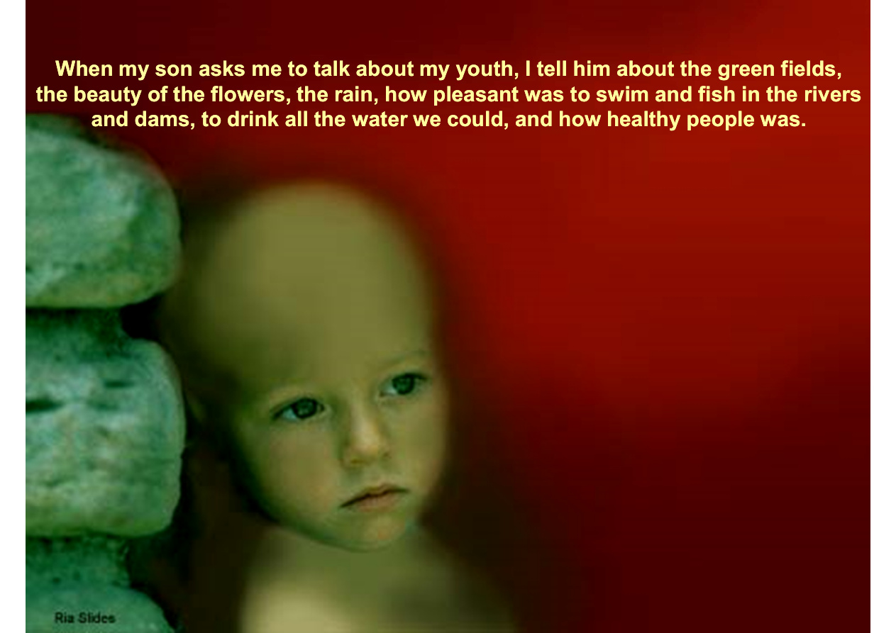
When my son asks me to talk about my youth, I tell him about t...
- •When my son asks me to talk about my youth, I tell him about the green fields, the beauty of the flowers, the rain, how pleasant was to swim and fish in the rivers and dams, to drink all the water we could, and how healthy people was. When my son asks me to talk about my youth, I tell him about the green fields,
This slide presents essential concepts in Lecture 01: When my son asks me to talk about my youth, I tell him about t.... Specifically, it examines When my son asks me to talk about my youth, I tell him about the green fields, the beauty of the flowers, the rain, how pleasant was to swim and fish in the rivers and dams, to drink all the water we could, and how healthy people was. When my son asks me to talk about my youth, I tell him about the green fields,. In the broader context of Course overview, sustainable development, environmental ads, global ecological awareness, and Dr. Kalam's 'Letter from 2070' highlighting extreme water scarcity and climate breakdown., mastering this material is critical for analyzing ecological tradeoffs, regulatory frameworks, and exam questions on environmental system dynamics.
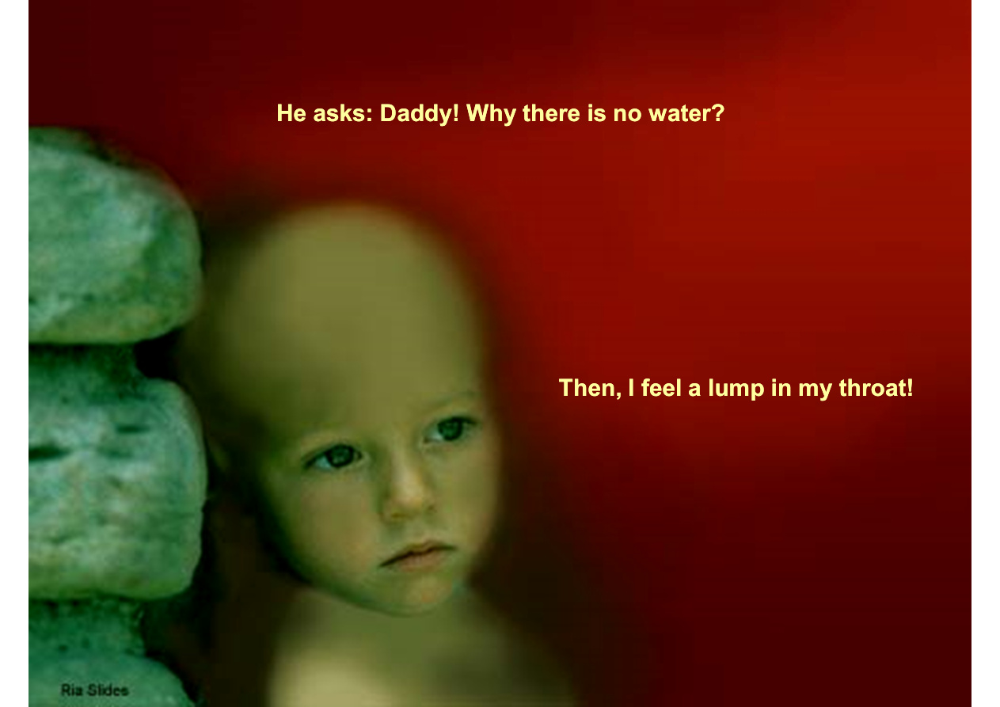
Then, I feel a lump in my throat!
- •Then, I feel a lump in my throat! Then, I feel a lump in my throat! He asks: Daddy! Why there is no water? He asks: Daddy! Why there is no water?
This slide presents essential concepts in Lecture 01: Then, I feel a lump in my throat!. Specifically, it examines Then, I feel a lump in my throat! Then, I feel a lump in my throat! He asks: Daddy! Why there is no water? He asks: Daddy! Why there is no water?. In the broader context of Course overview, sustainable development, environmental ads, global ecological awareness, and Dr. Kalam's 'Letter from 2070' highlighting extreme water scarcity and climate breakdown., mastering this material is critical for analyzing ecological tradeoffs, regulatory frameworks, and exam questions on environmental system dynamics.
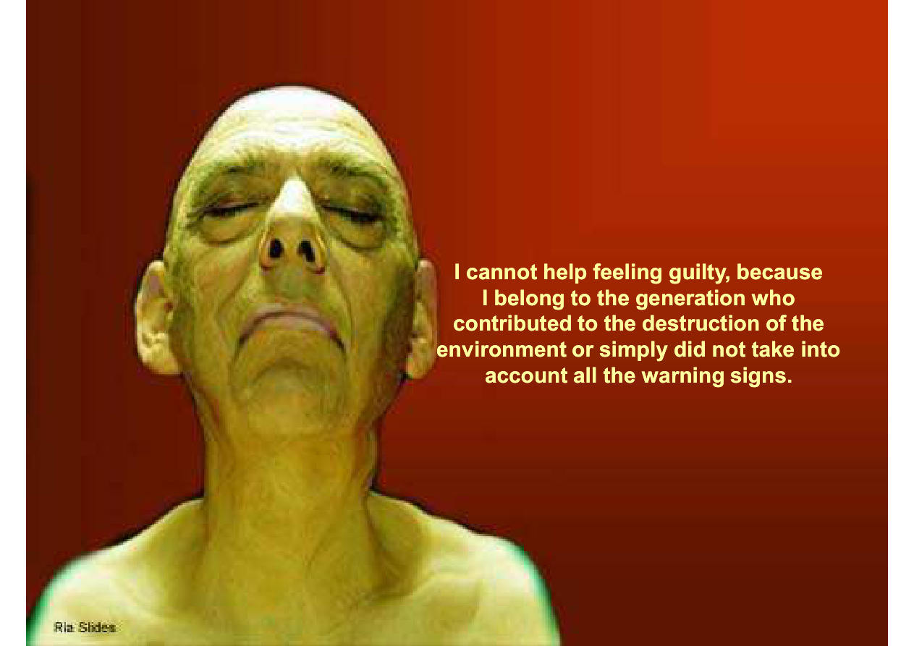
I cannot help feeling guilty, because
- •I cannot help feeling guilty, because I belong to the generation who contributed to the destruction of the environment or simply did not take into
This slide presents essential concepts in Lecture 01: I cannot help feeling guilty, because. Specifically, it examines I cannot help feeling guilty, because I belong to the generation who contributed to the destruction of the environment or simply did not take into. In the broader context of Course overview, sustainable development, environmental ads, global ecological awareness, and Dr. Kalam's 'Letter from 2070' highlighting extreme water scarcity and climate breakdown., mastering this material is critical for analyzing ecological tradeoffs, regulatory frameworks, and exam questions on environmental system dynamics.
Now our children
- •Now our children pay a very high price! Now our children pay a very high price!
This slide presents essential concepts in Lecture 01: Now our children. Specifically, it examines Now our children pay a very high price! Now our children pay a very high price!. In the broader context of Course overview, sustainable development, environmental ads, global ecological awareness, and Dr. Kalam's 'Letter from 2070' highlighting extreme water scarcity and climate breakdown., mastering this material is critical for analyzing ecological tradeoffs, regulatory frameworks, and exam questions on environmental system dynamics.
I sincerely believe that within a short time life on earth wil...
- •I sincerely believe that within a short time life on earth will not be possible, as the destruction of nature reached now an irreversible stage. I sincerely believe that within a short time life on earth will not be possible, as the destruction of nature reached now an irreversible stage.
This slide presents essential concepts in Lecture 01: I sincerely believe that within a short time life on earth wil.... Specifically, it examines I sincerely believe that within a short time life on earth will not be possible, as the destruction of nature reached now an irreversible stage. I sincerely believe that within a short time life on earth will not be possible, as the destruction of nature reached now an irreversible stage.. In the broader context of Course overview, sustainable development, environmental ads, global ecological awareness, and Dr. Kalam's 'Letter from 2070' highlighting extreme water scarcity and climate breakdown., mastering this material is critical for analyzing ecological tradeoffs, regulatory frameworks, and exam questions on environmental system dynamics.
How I would like to go back and make mankind understand…
- •How I would like to go back and make mankind understand… How I would like to go back and make mankind understand… ...that we still had time to save our Planet Earth. ...that we still had time to save our Planet Earth.
This slide presents essential concepts in Lecture 01: How I would like to go back and make mankind understand…. Specifically, it examines How I would like to go back and make mankind understand… How I would like to go back and make mankind understand… ...that we still had time to save our Planet Earth. ...that we still had time to save our Planet Earth.. In the broader context of Course overview, sustainable development, environmental ads, global ecological awareness, and Dr. Kalam's 'Letter from 2070' highlighting extreme water scarcity and climate breakdown., mastering this material is critical for analyzing ecological tradeoffs, regulatory frameworks, and exam questions on environmental system dynamics.
This show was made by a
- •This show was made by a very talented person, named A P J Abdul Kalam.
This slide presents essential concepts in Lecture 01: This show was made by a. Specifically, it examines This show was made by a very talented person, named A P J Abdul Kalam.. In the broader context of Course overview, sustainable development, environmental ads, global ecological awareness, and Dr. Kalam's 'Letter from 2070' highlighting extreme water scarcity and climate breakdown., mastering this material is critical for analyzing ecological tradeoffs, regulatory frameworks, and exam questions on environmental system dynamics.
⚡ Planetary Decarbonization & Emissions Pathway Simulator (2020–2070)
Simulate India's and global emission trajectories under policy, technology, and clean energy interventions.
Active Recall Flashcards
Test yourself on essential slide definitions, reactions, and principles before flipping.
Exam Traps, Fallacies & Professor Emphasis Points
Common student misconceptions and subtle distinctions tested in Midsem and Endsem exams.
- ⚠️ Trap: Confusing 'Net-Zero' with 'Absolute Zero Emissions'. Net-Zero permits residual emissions in hard-to-abate sectors (steel, cement, aviation) as long as they are balanced 1:1 by active carbon removal.
- ⚠️ Trap: Assuming increasing population $P$ is the sole driver of environmental degradation. In the IPAT equation, per-capita affluence $A$ and carbon intensity $T$ frequently outweigh population growth in total footprint.
- ⚠️ Exam Tip: Be ready to state all 5 Panchamrit targets from COP26, including the 500 GW renewable target and 2070 net-zero year.
Concept Check Quiz
Instant feedback on core conceptual and quantitative questions from the lecture slides.
Complete Slide Deck Quick-Jump Gallery
Quick visual reference of all 54 slides across this lecture deck with PDF downloads.